Junior Project & Programme Manager
Development Programmes·Youth & Enterprise·Social Impact
I build the operating layer that turns training into income — the tracking, the quality gates and the team structure that make a programme produce the same result in round five that it produced in round two.
Delivered with
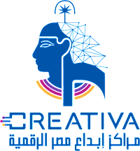
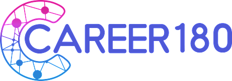
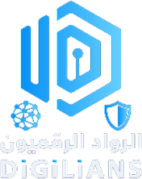
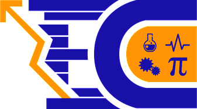
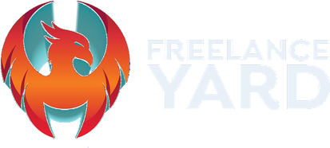
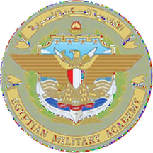
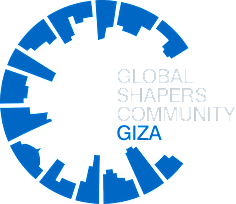
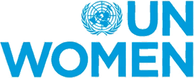
Six things I am actually called in for. Each one is the reason a number further down this page exists.
The gap between a course and an income is not curriculum — it is the absence of a system around the learner. I design that system: individual tracking, defined roles, one standard across providers, and a model that does not depend on who is working hard this week.
Ministries, a military academy, a UN agency and four competing technical providers, held to one delivery standard with a reporting line that has to be accurate every time it is read.
I define what counts as done and defend it. A gig counts only when it is delivered, paid, evidenced and accepted by Quality — not when a coach says it is finished.
I build the round's budget before it starts and size the team to it: pay models, commission rules and caseloads set against a ceiling, with every pound tied to work performed rather than to an outcome someone else achieved. A Round 5 model rebuilt this way came in roughly 400,000 EGP under the original plan without cutting delivery.
Specifying the systems that replace the spreadsheets: role-based portals, attendance and service pipelines, review routed to the right desk, and the SOPs and onboarding that make people actually use them.
KPI frameworks, intervention reports that name the problem, and documentation that satisfies a donor's compliance team without softening what happened.
Eight programmes. Each tab carries that programme's own figures — nothing pooled, nothing borrowed from the initiative around it.
Delivered with
Goal
Take a young Egyptian from a technical course to a first paying client — repeatably, at national scale.
Problem
Technical training alone does not produce income. Graduates finished courses without ever landing a paying client, and the gap was not curriculum — it was the absence of an operating system around the learner: no individual tracking, no quality gate on delivered work, no shared standard across providers.
What I owned
A curriculum does not turn learning into income — a system does. The measure I am proudest of is not the largest number in any single round; it is that completion held above 87% three rounds running.
The programme in numbers
Round by round
| Round | Trainees | Graduates | Completion | Groups |
|---|---|---|---|---|
| R1 | ~2,700 | 2,122 | 78.6% | 120 |
| R2 | ~4,100 | 3,870 | 94.4% | 160 |
| R3 | 2,684 | 2,326 | 87.0% | 145 |
| R4 | 2,103 | 1,835 | 87.3% | 102 |
| R5 | 2,948 | in progress | 85% target | 131 |
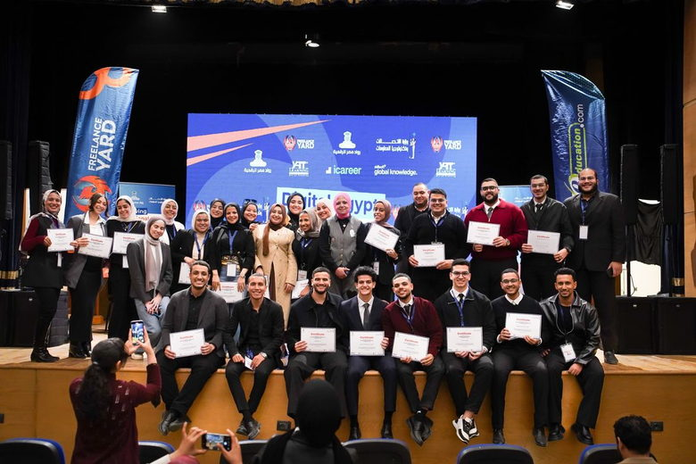
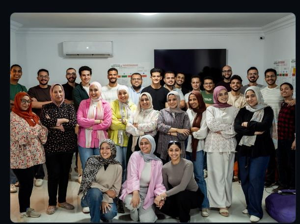
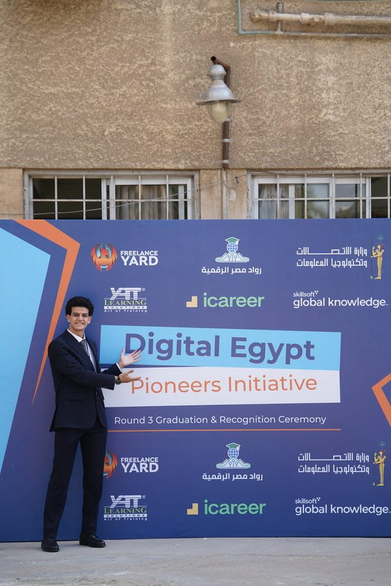
Delivered with
Goal
Equip a selected cohort with the non-technical skills that turn technical capability into paid, delivered work — as one of four partners in a presidential initiative.
Scope — and how it differs from DEPI
Here I owned the non-technical training itself as well as the coaching phase and its target: soft skills, entrepreneurship as a shorter module, and freelancing, delivered as one curriculum and carried through coaching to the outcome. On DEPI my ownership is the coaching phase alone. Across the two diplomas the cohort spanned seven technical tracks and fifteen job profiles.
What I owned
Two cohorts on the same initiative needed two different definitions of done. The figure I treat as the real result is not the 98.07%; it is the 850 accepted gigs, because acceptance is the only measure a client signs off on.
The programme in numbers
By diploma
| Track | Trainees | Graduates | Rate |
|---|---|---|---|
| 4-month intensive | 278 | 271 | 97.5% |
| 9-month specialised | 84 | 84 | 100% |
Part of
Goal
Lead the Giza Hub's contribution to Egypt's future across education, sustainability, civic participation and youth empowerment, as part of a network spanning 155+ countries and 500+ city hubs.
What I owned
In numbers
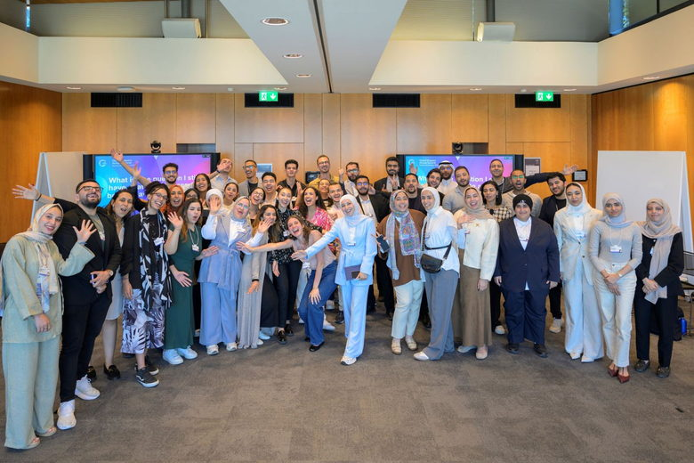
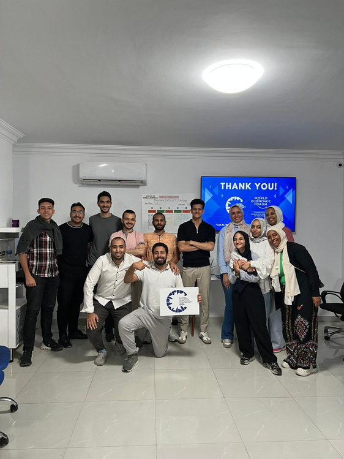
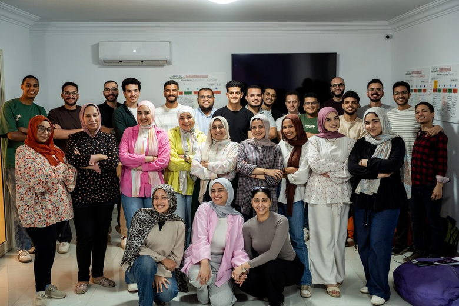
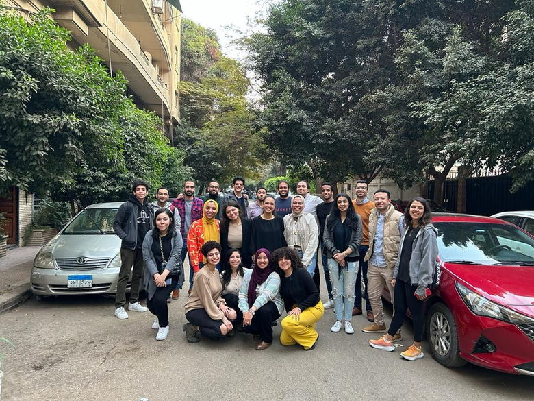
Delivered with
Goal
Give young people the skills employers and clients actually ask for, in a format a volunteer hub can run: a fixed curriculum, outside practitioners teaching it, and a measured result at the end of the batch.
What I owned
A twelve-workshop curriculum run by volunteers only holds if the measurement is built in from the first session. The two numbers I trust here are the 85% and the 90%, because they were collected the same way after every workshop.
In numbers
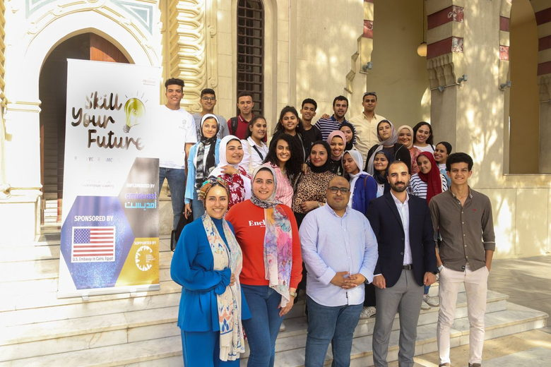
Delivered with
Goal
Build the entrepreneurial capability of women running start-ups and early-stage companies, and connect them to investors and finance — widening women's participation in the private sector.
What I owned
In numbers
Programme & partners
Goal
Build a community around founders' real stories rather than another business event series — showing aspiring entrepreneurs the struggles behind a startup, not only the wins.
What I owned
In numbers
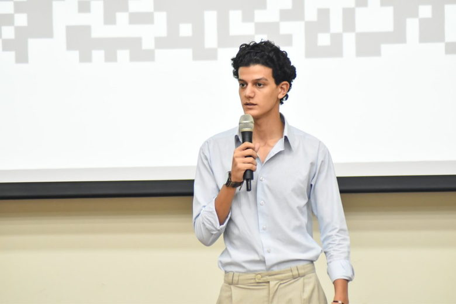
Programme & partners
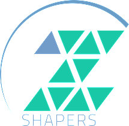
Goal
Open the development sector to university students and recent graduates — a real view of what the sector is, and a route into it through sessions, workshops, mentorship and networking.
What I owned
In numbers
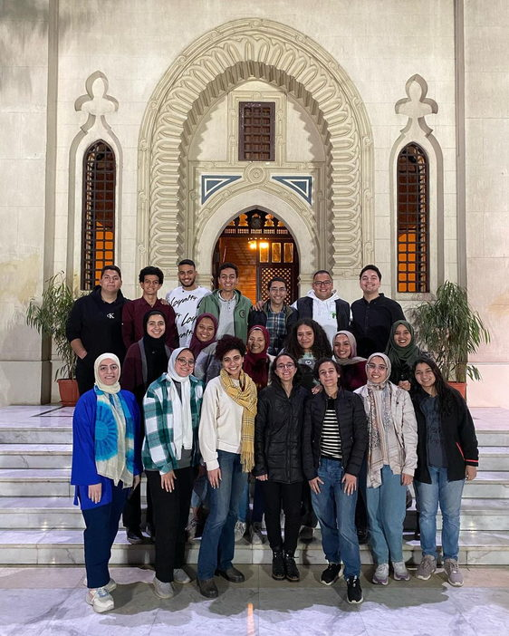
Delivered with
Goal
Make the results of national hiring and industry events measurable — so that what the events claimed and what they produced could be compared.
What I owned
In numbers
Part of
Goal
Turn Egypt's overlooked places into a working tourism market — and make a living for the local guides who know them.
Problem
Tourists reach only the well-known sites, so whole governorates stay invisible and the local guides who serve them have no market to sell into.
Competition record
First in the Enactus league, and first in eight corporate and NGO special competitions — PepsiCo, EBANK, Orascom Construction, Juhayna, Orange, Banque du Caire, UNICEF and Ebda3 — plus a top-ten finish in El Forsa.
The first project where I learned that the measure of a social venture is not the idea but whether money reaches the people it was built for. 126 guides earning is the number that mattered.
In numbers
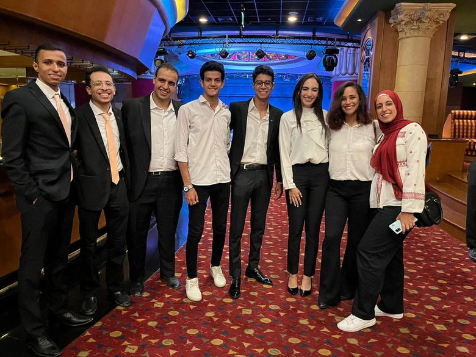
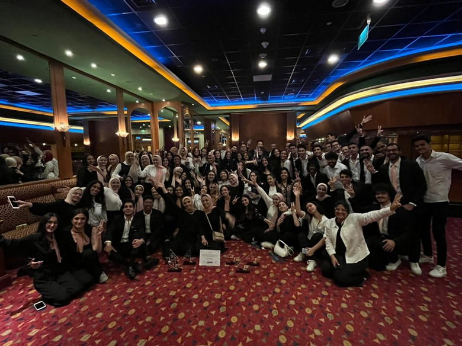
Four years alongside the first three projects on this page. Enactus Cairo University ran out of the same campus, and Tripal started there in the second year.
A fellowship in the development sector: a year-long placement inside a host organisation, a research component, and two international convenings a year. The same centre that partnered ZShapers in 2023.
Also: PMP (in progress) · McKinsey Forward Program · GLTP — TOBITATE! Japan · Google Data Analytics · Official judge, NASA Space Apps Egypt
Thank you for everything. It was truly a pleasure working with you and the whole team. I learned so much throughout this experience, and I'm really grateful for all the support and great memories.
Second card — photo and comment to come
Third card — photo and comment to come
The same figures as this page — every number reconciled against the round reports, nothing programme-wide presented as mine.
Project manager with four years delivering programmes across national digital-skilling, entrepreneurship and the development sector. Owns full delivery lifecycles, designs the operating systems that make outcomes repeatable, and carries government and donor relationships that depend on reporting being accurate every time it is read.
Lazord Fellow, American University in Cairo — John D. Gerhart Center · PMP (in progress) · McKinsey Forward Program · GLTP — TOBITATE! Japan · Google Data Analytics · Official judge, NASA Space Apps Egypt